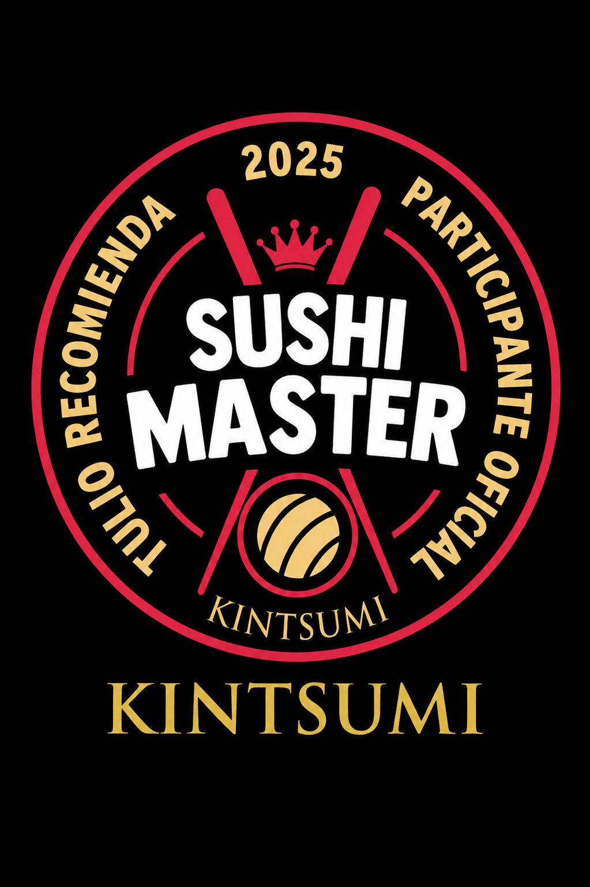

Restaurante japonés · Street food · Villavicencio
Ganador del Sushi Master 2026 · Recomendado por Tulio
SUSHI Y STREET FOOD JAPONÉS EN VILLAVICENCIO
Del street japonés a tu mesa: rolls frescos con todo el flow, hechos al momento. El mejor sushi de Villavicencio.

